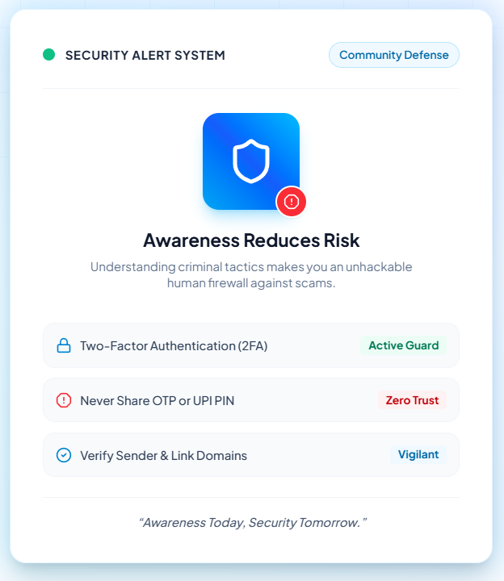
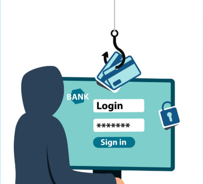

Defending Digital Lives Through Knowledge & Vigilance
In an era powered by rapid digital payments, mobile messaging, and hyper-connectivity, cyber threats target human trust.
The greatest strength of cyber criminals is not always advanced technology, but the ability to exploit human trust, curiosity, urgency, and fear. A message that appears genuine, a payment request that looks familiar, or an offer that seems too good to miss can make people act without thinking carefully. Cyber safety therefore begins with awareness. When users understand how deception works, they become more capable of pausing, questioning, and verifying before taking action online.
In the digital world, a single careless decision can sometimes have consequences far beyond the moment. Sharing a password, revealing an OTP, trusting an unknown link, or responding to a suspicious request may expose personal information, financial accounts, or online identity. Safe internet usage is not about being afraid of technology; it is about using technology with awareness, responsibility, and confidence. Good digital habits turn ordinary users into the first line of defense against cyber threats.
This awareness portal breaks down the mechanics of common online scams, equips you with essential prevention habits, and tests your fraud detection reflexes.
Cyber safety protects users from online threats and helps them use digital services safely. Cyber crimes such as phishing, OTP fraud, and UPI scams can cause financial and personal loss. Creating awareness helps reduce these risks.

Introduction
UNDERSTANDING THE DIGITAL THREAT LANDSCAPE
The internet has become deeply connected with everyday life, changing the way people communicate, learn, work, shop, transfer money, and access information. This growing digital connection brings convenience and opportunity, but it also creates situations in which users can become targets of cyber crime. Cyber safety is therefore not simply a technical concern; it is a practical part of responsible digital life. Understanding the risks around us helps us use technology with greater awareness and confidence.
Many cyber threats do not begin with complicated computer attacks. They often begin with a simple interaction—a message that creates urgency, a link that appears trustworthy, a request for an OTP, or an online offer that looks genuine. Cyber criminals take advantage of human trust and careless decisions to achieve their goals. This is why awareness is an important first line of defense. Recognizing suspicious behavior before responding can prevent a small moment of carelessness from becoming a serious problem.
This Cyber Safety Awareness website has been created to present important cyber-safety concepts in a simple and understandable way. Instead of focusing only on technical terminology, the website explains common cyber crimes, shows what attackers try to achieve, and highlights practical habits that can help users protect themselves. The purpose is to turn awareness into everyday action—think before you click, verify before you trust, and protect your information before sharing it.
Cyber safety protects users online.
Cyber crime includes phishing, OTP fraud, UPI scams.
Awareness reduces risk.
Improve digital literacy
Project Objectives
The Cyber Safety Awareness project is designed to help people become more informed, careful, and responsible users of digital technology. As online services become a regular part of everyday life, understanding digital risks is just as important as knowing how to use digital tools. This project focuses on building awareness, encouraging safer online behavior, improving digital knowledge, and helping users recognize common cyber threats before they become victims.
The five key goals of our community service project.
1.Create Awareness
The first objective is to create awareness about the growing risks that people may encounter while using the internet and digital services. Many users may not recognize a suspicious message, misleading request, or unusual online activity until it is too late. By providing simple and meaningful information about cyber threats, the project aims to help students, families, and communities become more alert and make safer decisions in their everyday digital activities.
2.Prevent Cyber Crimes
Awareness becomes useful when it leads to prevention. This objective focuses on helping users understand the basic warning signs of cyber crime and develop habits that can reduce their exposure to scams and fraud. By learning to protect confidential information, question unexpected requests, and verify suspicious communication, users can take preventive action instead of reacting only after an attack has occurred.
3.Promote Safe Internet
The internet should be a place where people can communicate, learn, work, and access services with confidence. This objective encourages responsible and secure internet usage by promoting careful browsing, thoughtful online communication, and safer digital transactions. The goal is not to create fear about technology, but to encourage users to enjoy its benefits while understanding the responsibilities that come with being connected.
4.Improve Digital Literacy
Digital literacy is more than knowing how to operate a device or use an application. It also means understanding how digital information, online communication, accounts, and transactions can create security risks. This objective aims to improve users' knowledge so they can evaluate online situations more carefully, recognize potential threats, protect their personal information, and make informed decisions while using digital technology.
5.Explain Common Cyber Crimes
Cyber crimes can take many forms, and each type may use a different method to deceive or manipulate users. This objective focuses on explaining common cyber crimes in a simple and understandable manner so that people can recognize them more easily. Understanding how criminals use techniques such as phishing, OTP fraud, UPI scams, fake websites, QR-code scams, identity theft, and fake job offers can help users identify warning signs and respond more safely.
Common Cyber Crimes
Phishing
OTP Fraud
UPI Payment Scam
Fake Websites
QR Code Scam
Identity Theft
Fake Job Offer Scam
Phishing Attack
Phishing is a form of cyber deception in which criminals create a sense of trust by pretending to be a person or organization that the victim already recognizes. Instead of attacking only through technology, the attacker tries to influence the victim into willingly revealing sensitive information. This can include passwords, One-Time Passwords (OTPs), and bank account details. The danger is that the request may appear genuine at first, making the victim believe that sharing the information is necessary or safe. Phishing succeeds when trust replaces careful verification, which is why recognizing suspicious requests and thinking before sharing sensitive information is an important part of cyber safety.
example
A person receives a message that appears to come from a trusted organization and is asked to provide their password or OTP to resolve an account issue. Believing the request is genuine, the person shares the information, allowing the criminal to misuse it.

<
OTP Fraud
OTP fraud is a type of cyber fraud in which scammers trick people into revealing the One-Time Password (OTP) sent to their mobile phone or email. The scammer may create a situation in which the victim believes that sharing the OTP is necessary to complete, cancel, or verify a transaction or account activity. Once the criminal obtains the OTP, they can use it to complete unauthorized transactions, access accounts, or steal money. This is why an OTP should always be treated as confidential information and never shared with another person.
example
A person receives a call from someone claiming to be a bank representative:
“An unusual transaction was detected on your account. Please tell me the OTP you just received so I can cancel it.”
The caller is actually trying to obtain the OTP to carry out an unauthorized transaction.
Key message
An OTP is meant to verify an action—not to be given to another person.
UPI Payment Scam
A UPI Payment Scam is a type of cyber fraud in which scammers deceive people into sending money or revealing sensitive information such as their UPI PIN. The scammer may create a believable situation that makes the victim feel that a payment is necessary or that they need to provide information to complete a transaction. By taking advantage of trust and confusion, the scammer tries to gain access to the victim's money. The main goal of a UPI payment scam is to steal money from the victim's bank account.
example
A scammer contacts someone and says:
“You have received a payment. Open your UPI app and enter your UPI PIN to receive the money.”
The victim may believe the message, but entering a UPI PIN is used to authorize a payment, which can result in money being sent to the scammer.
key message
A request involving your UPI PIN or an unexpected payment should always be verified before you take action.
Fake Websites
A fake website is a website created to look like a genuine website, online store, bank, company, or other trusted service. Scammers copy familiar names, logos, layouts, and messages to make the website appear legitimate and encourage visitors to trust it. The real danger is what happens after the visitor is convinced: the site may ask for login credentials, personal information, payment details, or other sensitive data. In some cases, a fake website may also be reached through a deceptive search result or a link sent by a scammer.
example
You search online for a shopping website and find a page that looks exactly like the real store. The name and logo appear genuine, but the web address is slightly different. The site offers a very attractive discount and asks you to enter your card details to complete the purchase. The website was created by a scammer to collect your information or money.
Key message
A familiar-looking website is not automatically a genuine website. Check the web address and verify the source before entering sensitive information or making a payment
QR Code Scam
A QR Code Scam is a form of digital fraud in which criminals misuse QR codes to trick people into making an unsafe payment or visiting a malicious destination. A scammer may send or display a QR code while claiming that it is needed to receive money, get a refund, collect a reward, or complete some other legitimate action. However, scanning the code may lead the user into a payment or other fraudulent process. The important point is that a QR code itself is not automatically dangerous—the risk comes from trusting an unverified QR code or the misleading story attached to it.
example
A scammer tells someone:
“Scan this QR code to receive your refund.”
The person scans it and is asked to enter their UPI PIN. Instead of receiving money, they may actually be authorizing a payment. NPCI specifically warns that scanning a QR code and entering a UPI PIN is meant for making a payment, not for receiving money.
Key message
Never scan an unexpected QR code just because someone tells you it will help you receive money. Check what you are authorizing before entering your UPI PIN.
Identity Theft
Identity theft is a form of cyber crime in which a criminal steals another person’s personal information and uses it without that person’s permission. The stolen information can then be used to carry out fraud or other illegal activities in the victim’s name. Because identity theft involves the misuse of someone’s personal identity, protecting personal information is an important part of staying safe in the digital world.
example
A criminal obtains another person's personal information and then uses those details without permission to carry out a fraudulent activity while pretending to be that person.
Key message
Your personal information is part of your digital identity—protect it carefully and never share it without a valid reason.
Fake Job Offer Scam
A fake job offer scam is a type of fraud in which criminals pretend to offer genuine and attractive employment opportunities in order to gain a job seeker's trust. The offer may appear convincing and may promise a good salary, easy work, or quick employment. After gaining the person's confidence, the scammer may try to obtain money, personal information, or banking details. The main danger is that the victim believes they are moving toward a real job when the actual intention is to steal information or money.
example
You receive a message saying:
“Congratulations! You have been selected for a work-from-home job with a salary of ₹40,000 per month. Pay ₹2,000 as a registration fee to confirm your position.”
The offer looks attractive, but the person contacting you is not a genuine recruiter. The request for money is being used to deceive you.
Key message
A good-looking job offer should still be verified. Never let excitement about an opportunity replace careful checking.
Prevention
Cyber safety does not depend on one single action. It comes from a collection of simple habits that are followed consistently while using the internet and digital services. Cyber criminals often succeed when users act without checking, trust unexpected requests, or share information too easily. By developing careful digital habits and staying alert to suspicious activity, users can reduce their exposure to common cyber threats and protect their personal information, accounts, and money.
Use strong passwords
Use two-factor authentication
Update software
Verify links
Never share OTP
Avoid suspicious links
Conclusion
Cyber safety is not only about knowing the dangers of the internet; it is about making the right decision when those dangers appear. A suspicious link, an unexpected OTP request, a fake offer, or an unusual payment request may seem small, but one careless action can have serious consequences. Awareness helps us pause, question, and verify before we act.
Digital literacy transforms technology from a risk into an opportunity.
Final Message
Think before you click.
Verify before you trust.
Stay alert, stay protected.
Project Info
Project: Cyber Safety Awareness
Department:
Computer Science and Engineering
Project Type:
Community Service Project
Guided by:
Mr. G. Sreenivasulu, M.Tech., Ph.D., Assistant Professor